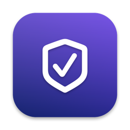

LatchwisePrivacy Policy
No accounts, ads, analytics or tracking, and nothing about you or your work is sent to us.
This policy explains how Latchwise (“the app”), a Mac app: checks your Mac's security settings and shows what changed, developed by Kevin Fitzgerald, handles information.
Information we collect
None. Latchwise does not collect, store, sell or share personal information on any server, and it does not include analytics, advertising, crash-reporting or tracking tools of any kind.
Information stored on your Mac
To work, the app keeps the following on your Mac only:
- Your scans (each setting’s status, the background items, listening ports and browser extensions with their permissions it read, the Mac’s name and macOS version), in a file in the app’s own folder on your Mac
- Pro watch features: the folders you chose for decoys with the names and fingerprints (SHA-256) of the canary files Latchwise planted there, the folder and backup copy you chose for backup proof with each run’s results (file paths inside those folders), the background items the persistence alarm has seen, and the alert log, in a second file in the same folder
- Your settings: the scan schedule, notifications, the decoy and persistence options, the “check yourself” items you confirmed and whether you’ve seen the welcome screen
- Your license key, in your Mac’s Keychain
Scans and the watch file are in Latchwise’s Application Support folder, settings in its preferences, and the license key in your Keychain. Canary files are written only into folders you choose (and removed when you stop watching); backup proof copies files into a temporary folder and deletes them; PDF reports and CSV exports are new files, written only where you choose.
Your Mac
Latchwise runs outside Apple’s App Sandbox because it needs to run Apple’s own read-only tools (fdesetup, csrutil, spctl, the firewall’s socketfilterfw, sysadminctl, lsof, profiles, codesign), read the LaunchAgents and LaunchDaemons folders and the extension folders of Chrome, Edge, Brave and Firefox, and keep watching the folders you choose. It never asks for or stores a password, never uses sudo, changes no setting and never removes anything. Commands that need an administrator are shown for you to copy and run yourself.
Your files
Decoys and backup proof (Pro) work only on folders you choose. Latchwise watches those folders for changes (macOS tells it which files changed, not their contents), samples a few kilobytes of changed files to tell whether they look encrypted, and reads files from your backup copy to compare them with your originals. For folders in Desktop, Documents or Downloads, macOS asks you first. Nothing about your files leaves your Mac.
Network
Latchwise is sold directly through Gumroad, and its only network requests are the license check with Gumroad (your license key, when you enter it and about once a week) and checks for app updates at fitztoppicks.com. Neither sends anything about your Mac or your scans. Pro’s optional outdated-apps check (Settings › Watch, off unless you turn it on) asks each browser maker’s public update feed for its newest version number (Google, Mozilla, Microsoft, Brave, Slack, VideoLAN), sending nothing about your Mac; and the app signing check uses macOS’s own Gatekeeper, which may ask Apple whether an app is notarized. To see whether sharing services are on, it tries to connect to a few ports on this Mac itself (127.0.0.1); nothing leaves the Mac.
Purchases
Latchwise is sold directly through Gumroad, which handles payment and sends your receipt and license key; we never see your payment details. The app sends your license key to Gumroad to check it (when you enter it and about once a week); that is all it sends to Gumroad.
Children’s privacy
Because the app collects no personal information from anyone, it does not knowingly collect personal information from children.
Changes to this policy
If this policy changes, the new version will be posted on this page with a new effective date. If the app ever begins collecting data, this policy will be updated before that happens.
Contact
Questions about this policy or the app: help@fitztoppicks.com.